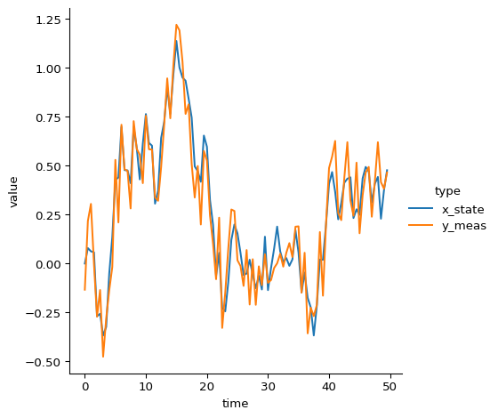
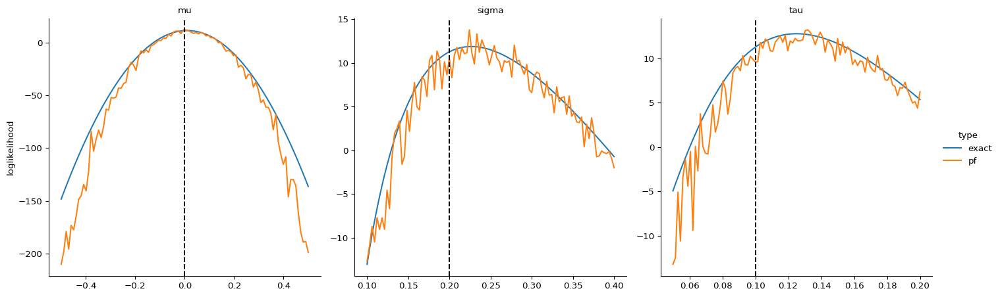

Introduction to PFJAX
Martin Lysy 2022-09-01
Summary
The goal of PFJAX is to provide tools for estimating the parameters \(\tth\) of a state-space model
In such models, only the measurement variables \(\yy_{0:T} = (\yy_0, \ldots, \yy_T)\) are observed, whereas the state variables \(\xx_{0:T}\) are latent. The marginal likelihood given the observed data is
but this integral is typically intractable. The state-of-the-art for approximating it is via particle filtering methods. PFJAX provides several particle filters to estimate the marginal loglikelihood \(\ell(\tth) = \log \Ell(\tth)\), along with its gradient \(\nabla \ell(\tth) = \frac{\partial}{\partial \tth} \ell(\tth)\) and hessian \(\nabla^2 \ell(\tth) = \frac{\partial^2}{\partial \tth \partial \tth'} \ell(\tth)\). To do this efficiently, PFJAX uses JIT-compilation and automatic differentiation as provided by the JAX library.
Using PFJAX typically involves two steps:
-
Specifying the model-specific components of the estimation procedure, e.g., the state-space model itself, and optional proposal functions (more on these below).
-
Selecting among various particle filtering algorithms, depending on e.g., the model and the type of inference to be conducted (more on this in the Gradient Comparisons notebook).
This tutorial will focus on step 1. Specifically, we’ll show how to use PFJAX to:
-
Create a state-space model class inheriting from
pfjax.BaseModel. -
Use this class to simulate data this state-space model via
pfjax.simulate(). -
Use a basic particle filter
pfjax.particle_filter()to estimate the marginal loglikelihood \(\ell(\tth)\).
# jax
import jax
import jax.numpy as jnp
import jax.scipy as jsp
import jax.random
from functools import partial
# plotting
import numpy as np
import pandas as pd
import seaborn as sns
import matplotlib.pyplot as plt
import projplot as pjp
# pfjax
import pfjax as pf
Example Model: Brownian Motion with Drift
The model is
The parameters of the model are \(\tth = (\mu, \sigma, \tau)\). Since \((\xx_{0:T}, \yy_{0:T})\) are jointly normal given \(\tth\), we can show (see here) that \(\yy_{0:T}\) is multivariate normal with mean and covariance
where \(\tilde \mu = \mu \dt\), \(\tilde \sigma^2 = \sigma^2 \dt\), and \(\delta_{st}\) is the indicator function. These formulas provide an analytic expression for \(\ell(\tth) = \log p(\yy_{0:T} \mid \tth)\), which we can use to benchmark our calculations.
Particle Filter Approximation of the Marginal Loglikelihood
The basic particle filter provided by PFJAX is the auxiliary particle filter described in (Poyiadjis, Doucet, and Singh 2011) Algorithm 1 and provided below.
Auxiliary Particle Filter
Inputs:
-
Parameters and measurement variables \(\tth\) and \(\yy_{0:T}\).
-
Number of particles \(N\).
-
Initial and subsequent proposal distributions \(q(\xx_0 \mid \yy_0, \tth)\) and \(r(\xx_t \mid \xx_{t-1}, \yy_t, \tth)\).
-
Auxiliary distribution \(s(\yy_t \mid \xx_{t-1}, \tth)\).
Outputs:
- Particle filter approximation \(\hat \ell(\tth \mid \yy_{0:T})\) to the marginal loglikelihood \(\ell(\tth)\).
Algorithm:
-
\(\xx_0^{(1:N)} \iid q(\xx_0 \mid \yy_0, \tth)\)
-
\(w_0^{(1:N)} \gets \frac{g(\yy_0 \mid \xx_0^{(1:N)}) \cdot \pi(\xx_0^{(1:N)} \mid \tth)}{q(\xx_0^{(1:N)} \mid \yy_0, \tth)}\)
-
\(\hat{\Ell}_0 \gets \sum_{i=1}^N w_0^{(i)}\)
-
\(W_0^{(1:N)} = w_0^{(1:N)}/ \hat{\Ell}_0\)
-
For \(t=1,\ldots,T\):
-
\(\tilde{\xx}_{t-1}^{(1:N)} \gets \operatorname{\texttt{resample}}(\xx_{t-1}^{(1:N)}, W_{t-1}^{(1:N)})\)
-
\(\xx_t^{(1:N)} \ind r(\xx_t \mid \tilde{\xx}_{t-1}^{(1:N)}, \yy_t, \tth)\)
-
\(w_t^{(1:N)} \gets \frac{g(\yy_t \mid \xx_t^{(1:N)} \mid \tth) \cdot f(\xx_t^{(1:N)} \mid \tilde{\xx}_{t-1}^{(1:N)})}{r(\xx_t \mid \tilde{\xx}_{t-1}^{(1:N)}, \yy_t, \tth)}\)
-
\(\hat{\Ell}_t \gets \sum_{i=1}^N w_t^{(i)}\)
-
\(W_t^{(1:N)} = w_t^{(1:N)}/ \hat{\Ell}_t\)
-
\(\hat \ell(\tth \mid \yy_{0:T}) = \sum_{t=0}^T \log \hat{\Ell}_t\)
In the auxiliary particle filter algorithm, the notation \(\xx_t^{(1:N)}\) stands for \(\xx_t^{(1)}, \ldots, \xx_t^{(N)}\), i.e., is over the vector of \(N\) particles. Similarly, operations of the form \(\xx_t^{(1:N)} \gets F(\xx_{t-1}^{(1:N)})\) are vectorized over the \(N\) particles, i.e., correspond to the for-loop
-
For \(i=1,\ldots,N\):
-
\(\xx_t^{(i)} \gets F(\xx_{t-1}^{(i)})\)
The \(\operatorname{\texttt{resample}}()\) function takes a weighted set of particles \((\xx^{(1:N)}, W^{(1:N)})\) and attempts to convert it to an unweighted sample \(\tilde{\xx}^{(1:N)}\) from the same underlying distribution. The simplest way to do this is via multinomial sampling, i.e., sampling with replacement from \((\xx^{(1:N)}, W^{(1:N)})\). Other resamplers are discussed in the Gradient Comparisons notebook.
Using the particle filters provided by PFJAX requires at minimum
that a class defining the state-space model be provided. This can be
done by deriving from a base class pfjax.BaseModel. One may
additionally provide the proposal and auxiliary distributions. The
optimal and default values of these are provided in the table below.
| Distribution | Optimal Value | Default Value |
|---|---|---|
| \(q(\xx_0 \mid \yy_0, \tth)\) | \(p(\xx_0 \mid \yy_0, \tth)\) | \(\pi(\xx_0 \mid \tth)\) |
| \(r(\xx_t \mid \xx_{t-1}, \yy_t, \tth)\) | \(p(\xx_t \mid \xx_{t-1}, \yy_t, \tth)\) | \(f(\xx_t \mid \xx_{t-1}, \tth\) |
| \(s(\yy_t \mid \xx_{t-1}, \tth)\) | \(p(\yy_t \mid \xx_{t-1}, \tth)\) | \(1\) |
The default values define the so-called Bootstrap particle filter
(Gordon, Salmond, and Smith 1993), which is
implemented in the example of the BMModel class below.
- The methods
BMModel.{prior/state/meas}_{lpdf/sample}()and their argument inputs and outputs must be as below for the machinery of PFJAX to operate correctly. - In this case we can directly compare the particle filter loglikelihood
approximation \(\hat \ell(\tth)\) to the true loglikelihood \(\ell(\tth)\)
defined the formulas above, so we’ll also add a method
BMModel.exact_lpdf()defining \(\ell(\tth)\) to the derived class below.
class BMModel(pf.BaseModel):
def __init__(self, dt):
"""
Class constructor.
Args:
dt: JAX scalar specifying the interobservation time.
"""
super().__init__(bootstrap=True) # Sets up a bootstrap filter
self._dt = dt
def prior_lpdf(self, x_init, theta):
"""
Calculate the log-density of the initial state variable at time `t=0`.
"""
scale = theta[1] * jnp.sqrt(self._dt)
return jsp.stats.norm.logpdf(x_init, loc=0.0, scale=scale)
def prior_sample(self, key, theta):
"""
Sample one draw from the initial state variable at time `t=0`.
"""
scale = theta[1] * jnp.sqrt(self._dt)
return scale * jax.random.normal(key=key)
def state_lpdf(self, x_curr, x_prev, theta):
"""
Calculate the log-density of the current state variable at time `t` given the previous state variable at time `t-1`.
"""
loc = x_prev + theta[0] * self._dt
scale = theta[1] * jnp.sqrt(self._dt)
return jsp.stats.norm.logpdf(x_curr, loc=loc, scale=scale)
def state_sample(self, key, x_prev, theta):
"""
Sample one draw from the current state variable at time `t` given the previous state variable at time `t-1`.
"""
loc = x_prev + theta[0] * self._dt
scale = theta[1] * jnp.sqrt(self._dt)
return loc + scale * jax.random.normal(key=key)
def meas_lpdf(self, y_curr, x_curr, theta):
"""
Calculate the log-density of the current measurement variable at time `t` given the current state variable at time `t`.
"""
loc = x_curr
scale = theta[2]
return jsp.stats.norm.logpdf(y_curr, loc=loc, scale=scale)
def meas_sample(self, key, x_curr, theta):
"""
Sample one draw from the current measurement variable at time `t` given the current state variable at time `t`.
"""
loc = x_curr
scale = theta[2]
return loc + scale * jax.random.normal(key=key)
def exact_lpdf(self, y_meas, theta):
"""
Calculate exact log-density of measurement variables at times `t=0:T`.
"""
mu_tilde = theta[0] * self._dt
sigma2_tilde = theta[1] * theta[1] * self._dt
tau2 = theta[2] * theta[2]
n_obs = y_meas.shape[0] # number of observations
t_meas = jnp.arange(n_obs)
mu_y = mu_tilde * t_meas # mean of y_meas
# variance of y_meas
Sigma_y = sigma2_tilde * \
jax.vmap(lambda t: jnp.minimum(t, t_meas))(t_meas)
Sigma_y = Sigma_y + sigma2_tilde
Sigma_y = Sigma_y + tau2 * jnp.eye(n_obs)
return jsp.stats.multivariate_normal.logpdf(
x=y_meas, mean=mu_y, cov=Sigma_y
)
Simulate Data
This is accomplished with the function pfjax.simulate().
# parameter values
mu = 0.
sigma = .2
tau = .1
theta_true = jnp.array([mu, sigma, tau])
# data specification
dt = .5
n_obs = 100
x_init = jnp.array(0.)
# initial key for random numbers
key = jax.random.PRNGKey(0)
# simulate data
bm_model = BMModel(dt=dt)
key, subkey = jax.random.split(key)
y_meas, x_state = pf.simulate(
model=bm_model,
key=subkey,
n_obs=n_obs,
x_init=x_init,
theta=theta_true
)
# plot data
plot_df = (pd.DataFrame({"time": jnp.arange(n_obs) * dt,
"x_state": jnp.squeeze(x_state),
"y_meas": jnp.squeeze(y_meas)})
.melt(id_vars="time", var_name="type"))
sns.relplot(
data=plot_df, kind="line",
x="time", y="value", hue="type"
)

Calculate Particle Filter Marginal Logikelihood
For this we will use the basic particle filter provided by
pfjax.particle_filter(). We’ll also compare the particle filter
approximation \(\hat{\ell}(\tth)\) to the exact loglikelihood \(\ell(\tth)\)
using “projection plots”, i.e., we’ll plot the one-dimensional marginal
loglikelihood in each of the parameters \(\tth = (\mu, \sigma, \tau)\)
with the other two parameters fixed at their simulated values.
- Projection plots are obtained with the help of the projplot package.
- Projection plots involve a fairly large number of evaluations of \(\hat{\ell}(\tth)\), which itself involes \(\bO(TN)\) evaluations of the state-space model functions \(f(\xx_t \mid \xx_{t-1}, \tth)\) and \(g(\yy_t \mid \xx_t, \tth)\). We will therefore employ the JIT compilation engine offered by JAX to massively speed up function evaluations.
- We’ll first create helper functions to evaluate the loglikelihoods which vectorize over multiple parameter values at once. In particular, this allows us to easily specify a different PRNG key for each evaluation of \(\hat{\ell}(\tth)\).
# particle filter specification
n_particles = 200 # number of particles
def bm_loglik_pf_nojit(theta, key):
"""
Particle filter loglikelihood of the BM model (un-jitted).
"""
theta = jnp.atleast_2d(theta)
subkeys = jax.random.split(key, num=theta.shape[0])
return jax.vmap(lambda _theta, _key: pf.particle_filter(
model=bm_model,
key=_key,
y_meas=y_meas,
n_particles=n_particles,
theta=_theta,
history=False,
score=False,
fisher=False
)["loglik"])(theta, subkeys)
# jitted version
bm_loglik_pf_jit = jax.jit(bm_loglik_pf_nojit)
# check jit speedup
key, subkey = jax.random.split(key)
%timeit bm_loglik_pf_nojit(theta=theta_true, key=subkey)
%timeit bm_loglik_pf_jit(theta=theta_true, key=subkey)
@jax.jit
def bm_loglik_exact(theta):
"""
Exact loglikelihood of the BM model (jitted).
"""
theta = jnp.atleast_2d(theta)
return jax.vmap(lambda _theta: bm_model.exact_lpdf(
theta=_theta,
y_meas=y_meas
))(theta)
# projection plot specification
n_pts = 100 # number of evaluation points per plot
# plot limits for each parameter
theta_lims = jnp.array([[-.5, .5], [.1, .4], [.05, .2]])
theta_names = ["mu", "sigma", "tau"] # parameter names
# calculate projection plot for exact loglikelihood
df_exact = pjp.proj_plot(
fun=bm_loglik_exact,
x_opt=theta_true,
x_lims=theta_lims,
x_names=theta_names,
n_pts=n_pts,
vectorized=True,
plot=False
)
# calculate projection plot for particle filter loglikelihood
df_pf = pjp.proj_plot(
fun=partial(bm_loglik_pf_jit, key=subkey),
x_opt=theta_true,
x_lims=theta_lims,
x_names=theta_names,
n_pts=n_pts,
vectorized=True,
plot=False
)
# merge data frames and plot them
plot_df = pd.concat([df_exact, df_pf], ignore_index=True)
plot_df["type"] = np.repeat(["exact", "pf"], len(df_exact["variable"]))
plot_df = plot_df.rename(columns={"y": "loglikelihood"})
rp = sns.relplot(
data=plot_df, kind="line",
x="x", y="loglikelihood",
hue="type",
col="variable",
col_wrap=3,
facet_kws=dict(sharex=False, sharey=False)
)
rp.set_titles(col_template="{col_name}")
rp.set(xlabel=None)
# add true parameter values
for ax, theta in zip(rp.axes.flat, theta_true):
ax.axvline(theta, linestyle="--", color="black")
900 ms ± 8.28 ms per loop (mean ± std. dev. of 7 runs, 1 loop each)
52.9 μs ± 29.5 μs per loop (mean ± std. dev. of 7 runs, 1 loop each)

Conclusions
- Jitting the particle filter computation offers almost a 1000x speed improvement!
- We see that the particle filter loglikelihood approximation is very accurate. However, it seems to be increasingly biased as we move away from the true parameter value (dashed vertical lines). This is likely because the quality of the bootstrap filter deteriorates considerably when this happens.
References
Gordon, N. J., D. J. Salmond, and A. F. M. Smith. 1993. “Novel Approach to Nonlinear/Non-Gaussian Bayesian State Estimation.” IEE Proceedings-F 140 (2): 107–13. https://doi.org/10.1049/ip-f-2.1993.0015.
Poyiadjis, G., A. Doucet, and S. S. Singh. 2011. “Particle Approximations of the Score and Observed Information Matrix in State Space Models with Application to Parameter Estimation.” Biometrika 98 (1): 65–80. https://doi.org/10.1093/biomet/asq062.
Appendix: Exact Likelihood of the BM Model
The distribution of \(p(\xx_{0:T}, \yy_{0:T} \mid \tth)\) is multivariate normal. Thus, \(p(\yy_{0:T} \mid \tth)\) is also multivariate normal, and we only need to find \(E[y_t \mid \tth]\) and \(\cov(y_s, y_t \mid \tth)\).
Conditioned on \(x_0\) and \(\tth\), the Brownian latent variables \(\xx_{1:T}\) are multivariate normal with
where \(\tilde \mu = \mu \dt\) and \(\tilde \sigma^2 = \sigma^2 \dt\).
Therefore, \(p(\xx_{0:T} \mid \tth)\) is multivariate normal with
Similarly, conditioned on \(\xx_{0:T}\) and \(\tth\), the measurement variables \(\yy_{0:T}\) are multivariate normal with
Therefore, \(p(\yy_{0:T} \mid \tth)\) is multivariate normal with